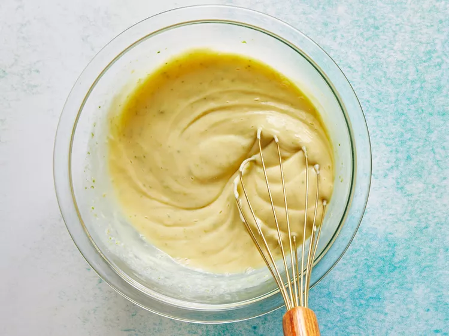
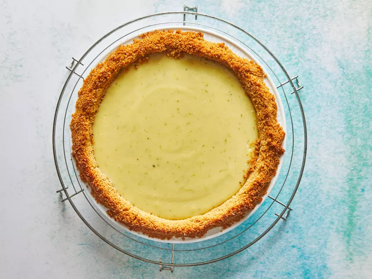
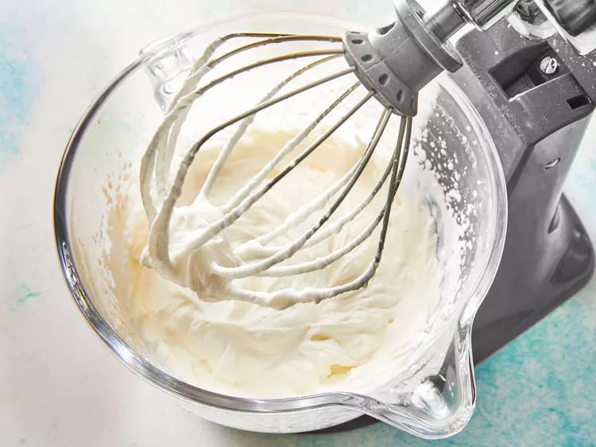
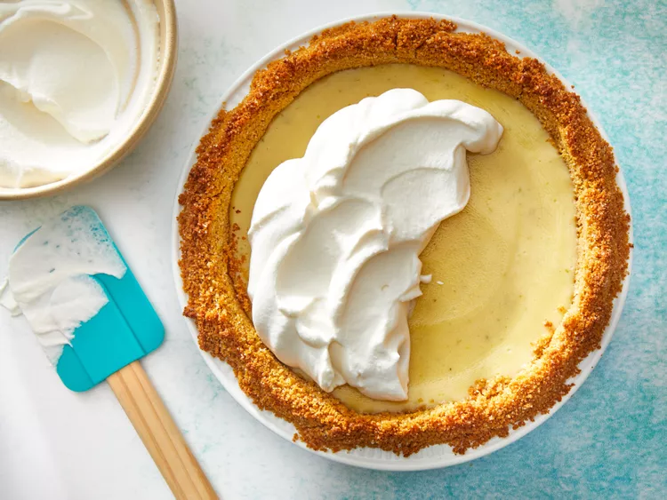

Return to index
J's Favorite Key Lime Pie Recipe
History behind Key Lime Pie
This sweet and tart pie reportedly originated in Key West, Florida, in the late 19th century. The use of sweetened condensed milk, an essential ingredient, is probably because fresh milk and refrigeration were uncommon in the isolated Florida Keys until the 1930s.
How to Store Key Lime Pie
The pie needs to be served chilled, so keep it in the fridge until you're ready to slice and serve. Whipped cream will hold for a while, but if you're making this pie ahead of time, wait to whip the cream and top the pie until you're ready to present it.
Have leftovers? Cover the pie plate in plastic wrap, and keep it in the fridge up to 3 days.
Ingredients
- 1 (14-oz.) can sweetened condensed milk
- 3 Egg Yolks
- 2 teaspoons Key Lime Zest
- 1/2 Cup Key Lime Juice
- 1(9-inch) graham cracker piecrust
- 1 cup whipping cream
- 3 tablespoons powdered sugar
- Garnish: fresh Key lime slices*
Instructions
Step 1 - Make Filing:
Preheat oven to 350°F. Whisk together condensed milk and next 3 ingredients until well blended.

Step 2 - Bake pie, then chill:
Bake at 350°F for 15 minutes or until pie is set. Cool completely on a wire rack (about 1 hour). Chill 1 hour before serving.

Step 3 - Top with whipped cream and garnishes:
Beat whipping cream at high speed with an electric mixer 2 to 3 minutes or until soft peaks form, gradually adding powdered sugar.


Return to top
Return to index